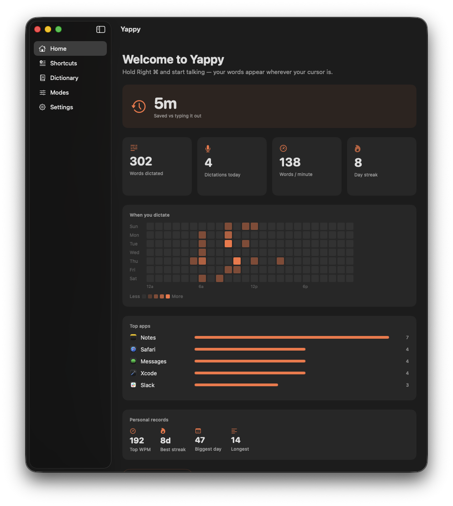
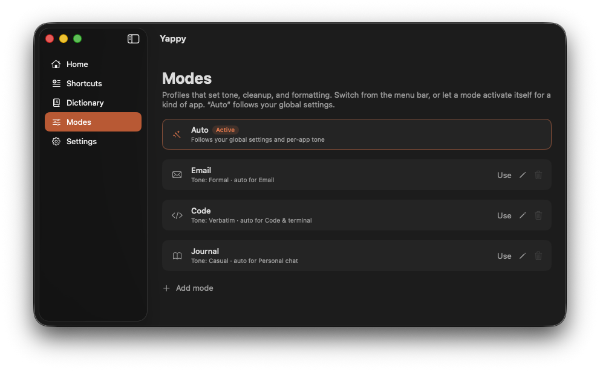
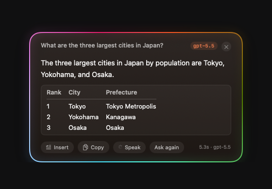
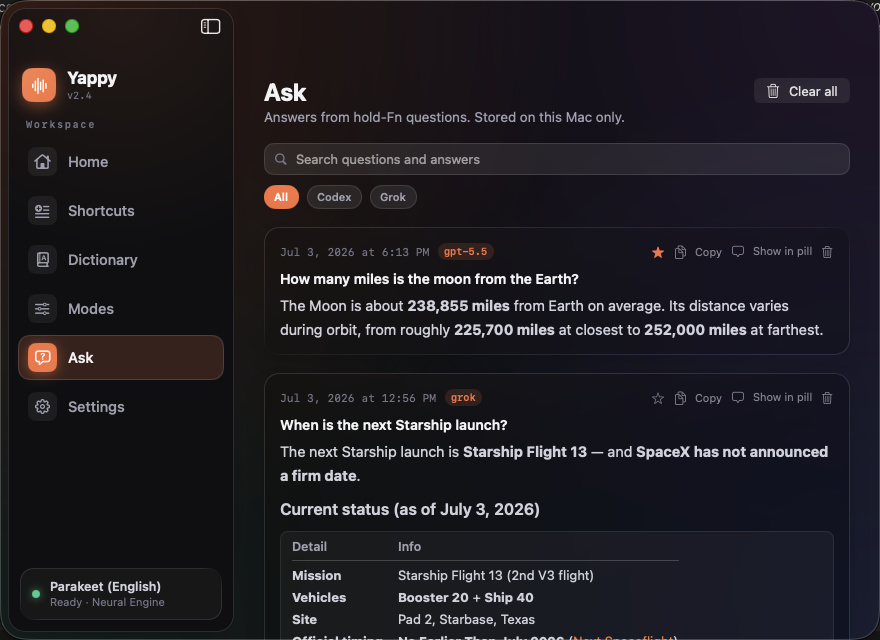
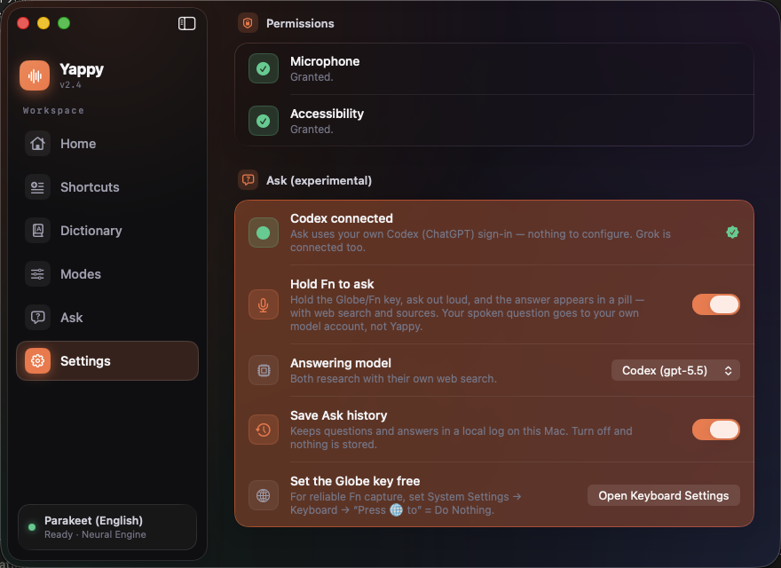
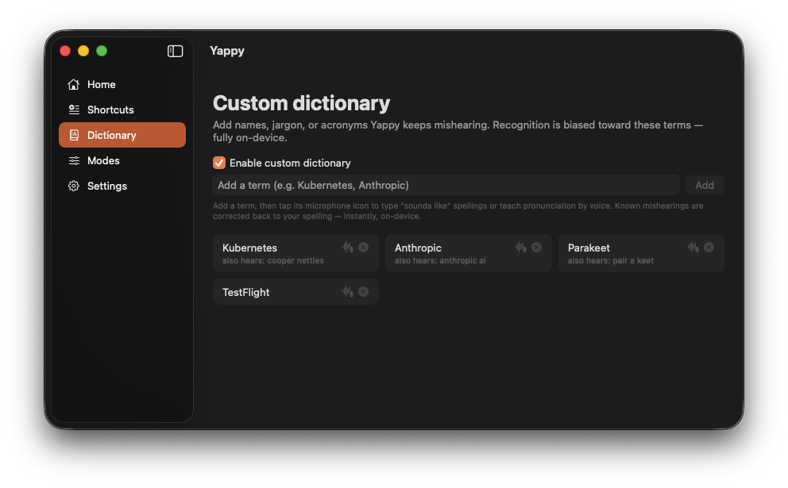
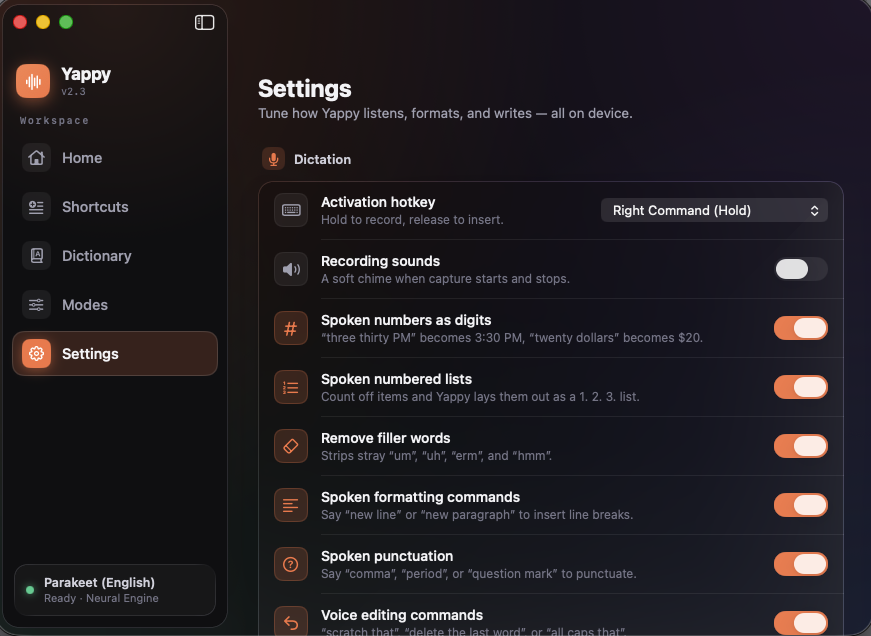

Talk.
It types.
Everywhere on your Mac.
Hold a key, speak, release. Your words appear at the cursor in any app, usually in under a second. No API keys, no cloud for dictation, no subscriptions. Your voice never leaves the device.

Your words land wherever your cursor already is
One key. Then just speak.
No window to open, no button to find. Yappy waits in the menu bar until you hold the hotkey.
Hold
Press and hold Right Command anywhere on your Mac. A recording pill fades in, ringed by a slowly circling glow while it listens: rainbow, white, or orange, your pick.
Speak
Talk naturally, at your pace. Parakeet transcribes on the Apple Neural Engine in real time.
Release
Let go and your text lands at the cursor, polished and ready, in under a second.
A real app that knows your voice.
Open Yappy and you land on a home that actually tells you something. How much time dictation has saved you, when you tend to talk, the apps you use it in most, and a searchable history. All stored locally.
- Time saved versus typing, words per minute, streaks, and personal records.
- A day-by-hour heatmap of when you dictate, drawn from your own history.
- Smart suggestions that turn phrases you repeat into one-click shortcuts.

Sometimes you want an answer, not a transcript.
Dictation types what you say. Answers researches what you ask. Hold Fn, say your question out loud, and the answer streams into a floating card, researched with live web search and shown with the sources it cited. The same listening glow rings the card from question to answer. It is the one feature that sends your question off this Mac, and it runs entirely on an AI account you already have.
- Hold FnAsk out loud. "Compare the M4 chips in a table."
- AnswerIt appears with real tables, code, and clickable source chips.
- Follow upHold Fn again and the conversation keeps going on the same thread.
- InsertSay "insert that" and it lands at your cursor, right where you were.
- ListenSay "read that" and a fully on-device voice reads the answer aloud.

Keeps the thread
Hold Fn again while an answer shows and the follow-up carries context. The card lists the whole question chain.
Lands at your cursor
"insert that" drops the answer as clean plain text where you were writing. Tables become tab-separated columns.
Driven by voice
Whole-utterance commands keep real questions safe: "copy that", "pin that", "try again", "dismiss".
Kept and searchable
Every answer saves to a local history you can search, filter by model, and star. Show Last Answer re-summons the newest.
Then it reads the answer back to you.
Switch on read-aloud and a natural voice reads the answer as it arrives, or just say "read that". It says years, dates, temperatures, and abbreviations the way you would, summarizes tables into sentences instead of reciting rows, and speaks in eight voices across American and British accents, at the pace you pick, from relaxed to quick. This part never reaches the cloud, even though Answers does: the voice runs entirely on your Mac, so the words you hear never leave it.

Every answer, kept where you can find it.
Completed answers land in a searchable history inside the main window, rendered exactly as they were in the card. Search across questions and answers, filter by the model that replied, and star the ones worth keeping so they float to the top. Copy any of them, re-show one in the pill, delete a single entry, or clear the lot. It is off unless you turn saving on, and it never leaves your Mac.
If you have Codex or Grok, you are ready.
Answers does not want a key or a login of its own. It looks for a CLI you have already signed into on your Mac, and lights up green when it finds one. Then it is a single toggle.
- Sign in once, in a terminalInstall the Codex CLI (ChatGPT) or the Grok CLI and log in the way you already do.
- Watch for the green lightSettings runs a silent readiness check and shows a green status when it detects your sign-in.
- Flip one toggle, pick a modelChoose gpt-5.5, Grok 4.5, or Composer 2.5 Fast, and switch anytime.

Built for the way you actually talk.
Deterministic formatting where it should be exact, on-device AI where it helps. Every feature degrades gracefully, so dictation never breaks.
Local transcription on the Neural Engine
NVIDIA Parakeet runs directly on the Apple Neural Engine, roughly 120 times faster than real time. Prefer another language? Switch to the multilingual NVIDIA Nemotron model in Settings. Either way the model downloads once and never phones home again, and it works on a plane with the Wi-Fi off.
Lands at your cursor, in any app
Editors, browsers, web views, terminals, Electron apps. Where direct insertion fails, Yappy pastes and restores your clipboard exactly, so nothing you copied gets clobbered. And if you release the key mid-sentence, just press and keep talking: the pieces join into one clean sentence, no stray period, no random capital.
Spoken numbers and marks
"three thirty pm" becomes 3:30 PM. Say "comma" or "question mark" when you want them. Deterministic, never an LLM.
Backtrack
Change your mind mid-sentence. "meet at 2, actually 3" lands as "Let's meet at 3."
A dictionary that learns your jargon
Pre-loaded with Supabase, Vercel, Kubernetes, and more. Train terms by voice, then flip one toggle and the speech model itself starts listening for them. Say "scratch that" and redo a word, and Yappy offers to remember the fix.

Tuned to taste, all in one place
Numbers, lists, filler removal, spoken commands, voice editing, modes, and optional cleanup. Every part is a toggle.

Voice editing
Say "scratch that", "delete the last word", or "all caps that". Second thoughts about the AI polish? "use what I said" puts your exact words back. Whole-utterance only, so prose is safe.
Scratchpad
A floating notepad a keystroke away (Option Shift S). Jot or dictate without leaving your app. Kept local, syncs nowhere.
Two capabilities. One honest line on each.
Dictation and Answers have different privacy stories, and we would rather you know exactly which is which.
The network is used only for model downloads, checking for and downloading app updates, and Answers when you enable it (through your own AI account). Yappy has no server, and your voice is never recorded to a file.
100% on-device.Always.
Most dictation apps stream your microphone to a server. Yappy does the opposite. There is nothing to sign in to.
-
Your voice is never recorded to a fileCaptured in memory, transcribed on device, then discarded.
-
No telemetry, no analytics, no accountNothing about how you use it is collected or sent anywhere.
-
Your data stays in plain local filesHistory, shortcuts, and dictionary live on your Mac. Clear them anytime.
-
Network only for models and updatesSpeech models download once. Sparkle checks for and downloads app updates. Dictation itself never needs the network.
Off by default.Only your question travels.
Answers is the one feature that sends your question off this Mac, and it stays dark until you turn it on. When you do, it sends the least it can, to an account that is yours.
-
Off until you enable itUntil you flip the toggle, Answers makes no network requests at all.
-
Only the typed-out question leavesYour speech is transcribed on device first. The audio never goes anywhere.
-
Your account, no server in the middleYappy talks to your local Codex or Grok CLI. It runs no server and stores no keys.
-
Read-only, and yours to clearThe model can answer but not act. Saving answers is its own toggle, and logs never hold your question text.
Quiet engineering you can feel.
Stop typing. Start talking.
Free, open source, and yours to keep. Download Yappy, hold Right Command, and watch your words appear. Hold Fn when you want an answer instead.